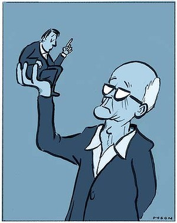

Old people a burden on healthcare: poppycock
Date February 28, 2014
Patricia Edgar
Far too many people, politicians included, are running scared about health costs breaking the bank. It's time for a dose of common sense.

Illustration: Andrew Dyson.
We should be celebrating living longer lives as one of the greatest achievements of the 20th century. Instead ageing is seen by the US political economist Robert Reich as ''a far bigger threat to the world economy than the eurozone debt crisis, US unemployment and the Chinese slowdown combined - a problem unfolding like a slow-motion train wreck''.
Our politicians are talking up this scenario. Healthcare, they claim, will be unaffordable. The myth that health costs and aged care will be the straws that break our system's back derives from simplistic analysis.
The longer we work, the more these costs will be relieved, and experts who look beyond the bottom line to examine the system point out there are many ways it can be more cost effective.
Healthcare prevention programs have increased the period of life that is free from disability and disease.
Logic and sound social and economic planning suggest that since our lifespan will continue to increase, it would make sense to continue to narrow the gap between ill health, decline and death and increase quality of life for as long as possible. Those who live longer, healthy lives can reasonably expect to have a short period of acute illness before they die.
Our expenditure on health services is not unreasonable for a developed country: Canada, Switzerland, France, Germany and the US spend more than we do. As well, studies of actual health costs show ageing is a minor part of cost increases in the medical process in Australia and internationally, and there are many ways by which costs could be reduced.
As part of a re-evaluation of ageing policies, medical guidelines for the dying must be improved. But we are not very good at talking about death. In the absence of such talk, millions of dollars are wasted on ''futile'' aggressive medical interventions on patients, unable to speak for themselves, whose death is inevitable.
It has been calculated that advance care planning would save $250 million annually, not to mention avoiding the trauma to patients and relatives of last-ditch efforts to extend life. This is one burden on overstretched hospitals that could be eased.
New knowledge and technical change have led to a sharp increase in expenditure on technology, therapeutic appliances and pharmaceuticals since the late 1990s.
These initiatives have some benefits and some downside. The use and abuse of pharmaceuticals should be examined to determine appropriate usage.
Advances in pharmaceuticals have reduced the need for treatment in hospitals and allowed the aged to remain in their homes, thereby reducing aged-care costs. And then there is the new science of pharmacogenics - prescribing drugs based on an individual's biomarkers, which can be examined through a simple blood test. This can tell a doctor whether a patient will have a good response to a drug, a poor response or no response at all.
Applying this science would save the health system $12 billion over the next five years from avoided adverse drug reactions and unnecessary pharmaceutical spending, as well as improving dramatically the lives of many patients - yet this is not happening.
New technologies have already helped reduce rates of hospital admission and the duration of hospital stays. Two examples are the use of improved anaesthetics for older patients, and improved cataract surgery techniques.
Surgical methods need reviewing as some doctors are questioning the value of procedures such as arthroscopy, spine fusion of the lower back and carotid artery surgery for people with blockages in the neck. There is mounting evidence they are ineffective and other treatments could be more useful.
Doctors are calling for new surgical techniques to be subjected to the same level of scrutiny as new drugs.
Promotion of the aged-care burden myth may have a political purpose - to favour the private health sector and seek to contain public sector activity.
Government has been successful in the past in identifying areas for reform in the health-prevention sector that have been cost effective. For example, the HIV/AIDS campaign; the anti-smoking campaign; fluoridation of water; regulation of safety belts; drink-driving campaigns.
Now they need to pay attention to the pharmaceutical industry and education about the proper use of pharmaceuticals; evaluate the way doctors prescribe them; and get people off unnecessary drugs.
To improve efficiency, state-of-the-art IT systems need to be installed throughout the health system. Alongside reforms within the system there should be a national program to advance health and wellbeing through consumer education, including exercise campaigns. Almost one-third of Australians over 65 do not exercise at all. Accessible exercise programs should be a priority as the potential to reduce cost to the overall system from such programs is massive.
Dementia is seen as another future ''burden'' on society and while the major effort is going into a pharmaceutical solution, interesting research reveals there may be a simpler way. There is a 45 per cent decrease in dementia among older people who are regularly using a computer compared with those who are not. So why aren't there more courses on IT for ''oldies''?
Old age is a natural and inevitable stage of life, which has its particular needs as does childhood, adolescence, our adult years and our working life.
Those needs form part of our social contract with government, a key aspect of living in a democracy. The needs of old age should be seen as no more of a burden than childcare services, education services, gainful employment, health, disability and welfare services. At each stage of life the state provides essential services and does not scapegoat the recipient of those services. The provisions for old age should be in the same category.
The facts are: we are healthier than ever before; we are much wealthier on average than any previous generation; we have paid our health insurance over years; we have been active contributors to society throughout our lives and we will cost society less the more we look after ourselves.
Significantly, we are better informed about healthcare options and politically much more influential than the aged have been before us. And we are capable of continuing to contribute productively to our own upkeep. It is neglect and ignorance that is turning us into a burden: the language used in this discussion has to change.
Patricia Edgar is the author of In Praise of Ageing.